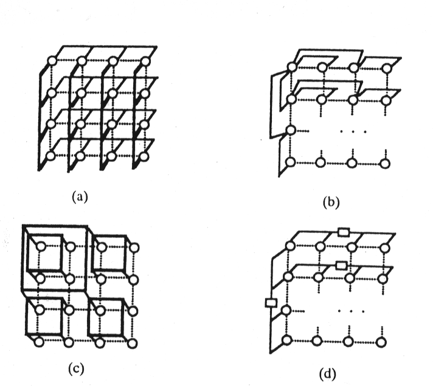
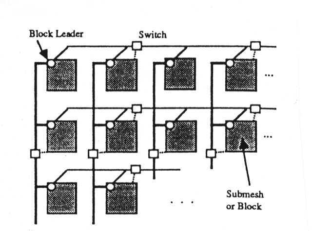
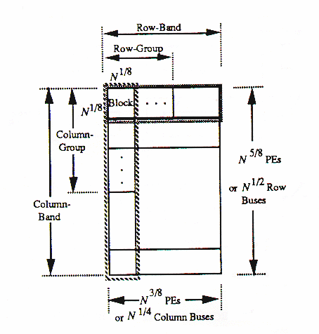
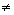

Optimal Architectures and Algorithms for Mesh-Connected Parallel Computers with Separable Row/Column Buses
Mauricio J. Serrano and Behrooz Parhami
IEEE Transactions on Parallel and Distributed Systems, Vol. 4, No. 10, pp. 1073-1080, Oct. 1993.
Abstract
For meshes with separable row/column buses, they showed how semigroup and prefix computations can be performed with the same asymptotic time complexity O(N1/8) without the provision of buses for every row and every column and discuss the VLSI implications of this new architecture. They found that square meshes are not optimal for the above algorithms and the time complexity can be reduced by using rectangular meshes.

Fig. 1. Different interconnections schemes for a mesh:(a)mesh with row and column broadcast buses, (b) hypermesh, (c) mesh with multiple global buses, and (d) mesh with separable row and column buses.

-An N5/8
x N3/8 mesh composed of N1/8 x N1/8 PE(processor element) blocks.
¨
Semigroup Computation Algorithm
Step1
( Block Reduction): Perform the semigroup computation for each blosk. O(N1/8). The problem size from N to N3/4.
Step 2a (Row-Group Reduction): O(N1/8). The problem size becomes to N5/8.
Step 2b (Row-Band Reduction): Copy the partial results from row-group leaders to row-band leaders and perform the semigroup computation. O(N1/8). The problem size becomes to N1/2.
Step 3a (Column-Group Reduction): O(N1/8). The problem size becomes to N3/8.
Step 3b
(Replication of Values): Broadcast the partial result of each leftmost column leader to all PE’s connected to a row bus, constant time.
Step 3c (Column-to-Row Transposition): Partition the N3/8 partial results into N1/4 groups and each having N1/8 elements, so that each group can use a column. O(N1/8). The problem size becomes to N1/4.
Step 4a/b
(0th-Row Reduction): Apply 2a and 2b. O(N1/8).
¨
Prefix Computation
Step1 :
Local Prefixes for each Block.
Step 2
(Row Reduction): Generate row-group prefixes by broadcasting data using row bus sections. The rightmost column contains the row-band prefixes.
Step 3 (Column Reduction): Generate the column group prefixes by broadcasting data on column bus sections (the rightmost column bus). Broadcast the resulting N3/8 prefixes within rows and do column-to-row transposition.
Step 4 (0th-Row Reduction): Do a prefix computation for the items in Row 0.
Step 5-8
(Backward Phase): These constitute Phase 2 of the algorithm. Go from global to local. Steps 1 through 4 are performed backwards to obtain the prefix in each PE.
n
Since any step in this algorithm takes O(N1/8), the overall time complexity is O(N1/8).
Definition:
Nr x Nc Rectangular mesh with Nr rows and Nc columns(r+c=1,r
c).Nk x Nk Size of a block of PEs connected only by local links(k<1/2).
R Number of hierarchical sectioning levels for row buses.
C Number of hierarchical sectioning levels for column buses.
the optimal time complexity is O(N1/(2R+C+2)).
the optimal mesh has Nr=N(R+C+1)/(2R+C+2) x N(R+1)/(2R+C+2).
n
They concluded that the optimal mesh is always retangular because R+C+1
R+1. And they check R=C=2 as their previous algorithm.
n
For R=C=L, O(N2L/(3L+2)). Compare the result with reported by Carlson using a hierachy of L global buses connecting all PE’s, achieving a running time of O(N(1/L+2)).
[Created by: Lee-Chuan Fan
Date: Apr. 23, 1997]